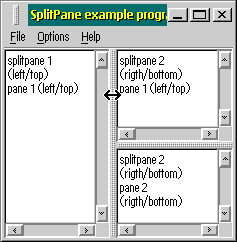
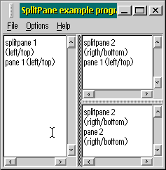
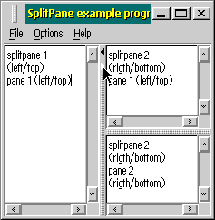
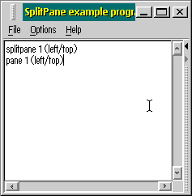

| 
In this picture a splitpane control
overlays the whole client area of a window. Another splitpane, a child of
the previous one, is situated over the right area of its parent.
|
| 
The splitter can be
moved with the keyboard. This picture shows a splitter featuring the
input focus emphasis.
|
| 
A splitter can optionally
include a clickable area displaying arrows to collapse or
restore one of the panes on its side. The arrow color changes according
to its current state (normal, mouse button pressed or disabled state).
|
| 
This picture shows
the result of the event displayed in the previous one. As a consequence
of a mouse click over the right arrow, the right area of the splitpane
has been collapsed. The right arrow can no longer be clicked and so is
painted in a different color to indicate its disabled state.
|
A pattern, painted over the splitter, shows the user that it is an interactive area, not just plain dialog background.
As the mouse pointer is moved over the splitter its shape changes to show that the splitter can be moved horizontally (or vertically if it is an horizontal splitter).
To be able to recognize keyboard events the splitpane must first acquire the input focus. Unlikely most other controls it does not acquire the focus when a mouse button is clicked over it (the user can still drag it around with the mouse, without stealing the focus from other controls), but only when the user is already using the keyboard and switches the focus among the various controls by the TAB key.
As soon as the splitter gets the input focus, the pattern changes from a two colors 3D one to a single color (usually the foreground color).
The direction keys are used to move the splitter in steps as long as
the splitter thickness.
The Page-up/down keys reduce the widths of one of the two panes to its
minimum (by default zero pixels).
The Home/End keys completely hide one of the side areas (if the current
splitpane style allows that).
The splitpane control optionally allows to
immediately hide and restore one of its side panes. In this case the
splitter includes a clickable area with two triangle shaped arrows.
The mouse pointer shape switches to the default when the mouse is moved
over the clickable area.
Once the left mouse button is pressed over an arrow, the color changes
to provide a visible feedback of the event. Then if the mouse button is
released over the arrow the corresponding pane is collapsed while the
other pane occupies the whole area and the just clicked arrow takes a
different color to display its disabled state.
A collapsed pane can be restored by a click on the enabled arrow or
just by dragging it to any other position.